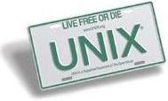
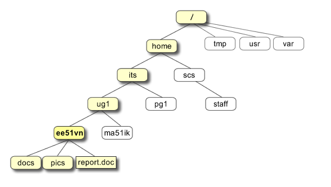
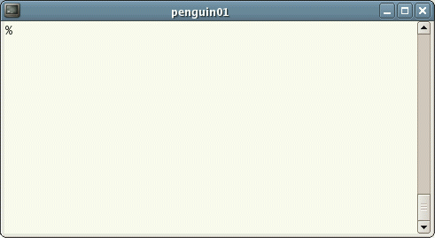

UNIX Introduction
What is UNIX?
UNIX is an operating system which was first developed in the 1960s, and has been under constant development ever since. By operating system, we mean the suite of programs which make the computer work. It is a stable, multi-user, multi-tasking system for servers, desktops and laptops.
UNIX systems also have a graphical user interface (GUI) similar to Microsoft Windows which provides an easy to use environment. However, knowledge of UNIX is required for operations which aren't covered by a graphical program, or for when there is no windows interface available, for example, in a telnet session.
Types of UNIX
There are many different versions of UNIX, although they share common similarities. The most popular varieties of UNIX are Sun Solaris, GNU/Linux, and MacOS X.
Here in the School, we use Solaris on our servers and workstations, and Fedora Linux on the servers and desktop PCs.
The UNIX operating system
The UNIX operating system is made up of three parts; the kernel, the shell and the programs.
The kernel
The kernel of UNIX is the hub of the operating system: it allocates time and memory to programs and handles the filestore and communications in response to system calls.
As an illustration of the way that the shell and the kernel work together, suppose a user types rm myfile (which has the effect of removing the file myfile). The shell searches the filestore for the file containing the program rm, and then requests the kernel, through system calls, to execute the program rm on myfile. When the process rm myfile has finished running, the shell then returns the UNIX prompt % to the user, indicating that it is waiting for further commands.
The shell
The shell acts as an interface between the user and the kernel. When a user logs in, the login program checks the username and password, and then starts another program called the shell. The shell is a command line interpreter (CLI). It interprets the commands the user types in and arranges for them to be carried out. The commands are themselves programs: when they terminate, the shell gives the user another prompt (% on our systems).
The adept user can customise his/her own shell, and users can use different shells on the same machine. Staff and students in the school have the tcsh shell by default.
The tcsh shell has certain features to help the user inputting commands.
Filename Completion - By typing part of the name of a command, filename or directory and pressing the [Tab] key, the tcsh shell will complete the rest of the name automatically. If the shell finds more than one name beginning with those letters you have typed, it will beep, prompting you to type a few more letters before pressing the tab key again.
History - The shell keeps a list of the commands you have typed in. If you need to repeat a command, use the cursor keys to scroll up and down the list or type history for a list of previous commands.
Files and processes
Everything in UNIX is either a file or a process.
A process is an executing program identified by a unique PID (process identifier).
A file is a collection of data. They are created by users using text editors, running compilers etc.
Examples of files:
- a document (report, essay etc.)
- the text of a program written in some high-level programming language
- instructions comprehensible directly to the machine and incomprehensible to a casual user, for example, a collection of binary digits (an executable or binary file);
- a directory, containing information about its contents, which may be a mixture of other directories (subdirectories) and ordinary files.
The Directory Structure
All the files are grouped together in the directory structure. The file-system is arranged in a hierarchical structure, like an inverted tree. The top of the hierarchy is traditionally called root (written as a slash / )

In the diagram above, we see that the home directory of the undergraduate student "ee51vn" contains two sub-directories (docs and pics) and a file called report.doc.
The full path to the file report.doc is "/home/its/ug1/ee51vn/report.doc"
Starting an UNIX terminal
To open an UNIX terminal window, click on the "Terminal" icon from Applications/Accessories menus.

An UNIX Terminal window will then appear with a % prompt, waiting for you to start entering commands.



M.Stonebank@surrey.ac.uk, © 9th October 2000